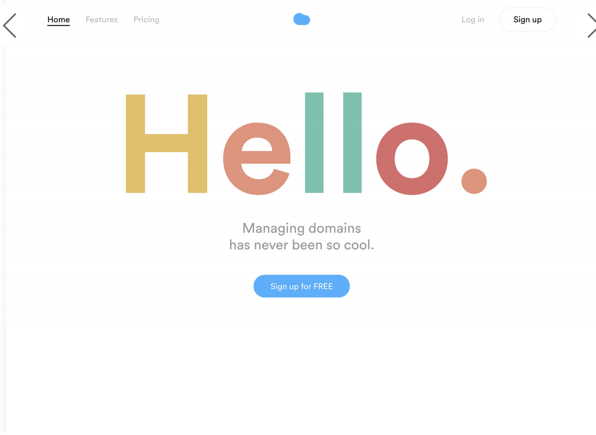

Lab 13: Typography I
Purpose:
The purpose of this lab is to be able to use block-level styling and to be able to use different elements of typography in order to recreate a webpage of our choice.
Challenges:
The challenges that we faced while completing this lab were that were different elements that we had to work on in our website. we thought it would be relatively easy page to work on, but we kept on having to include different parts and making sure that each part was where is should be on the Page. it took us a couple of hours to complete the page as there were many times in which we had to go back and forth fixing deatils.
Results:
Displayed in our webpage are the results of Lab 13.
